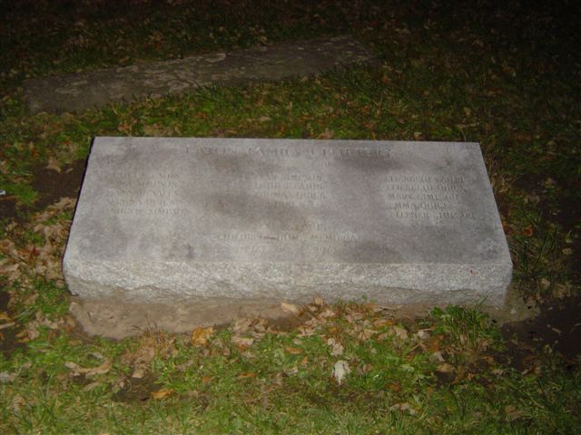

Coffin Road

Rumor has it that the winding Paulding County road known as Coffin Road was once the site of a gruesome incident involving a childrens' home. Supposedly an old man who hated children set the place on fire, killing many of the orphans, and then went back down the road and hung himself from a tree which still exists today and is known as the "hangman's tree." A plaque marks the spot where the orphanage once stood. If you go down Coffin Road on the right evening you might catch a glimpse of one of the children or maybe the old man himself, still hanging from his tree. Another popular activity is taking a ouija board out to the orphanage site and trying to contact a specific child from the names listed on the memorial.
It's an excellent local legend, but the similarities to the Gore Orphanage in Lake County make you wonder. It is apparently a factual case, though. Special thanks to fellow ghost hunter Laura Daeger, who sent the picture of the plaque above and confirmed some facts for me about the story.
Back